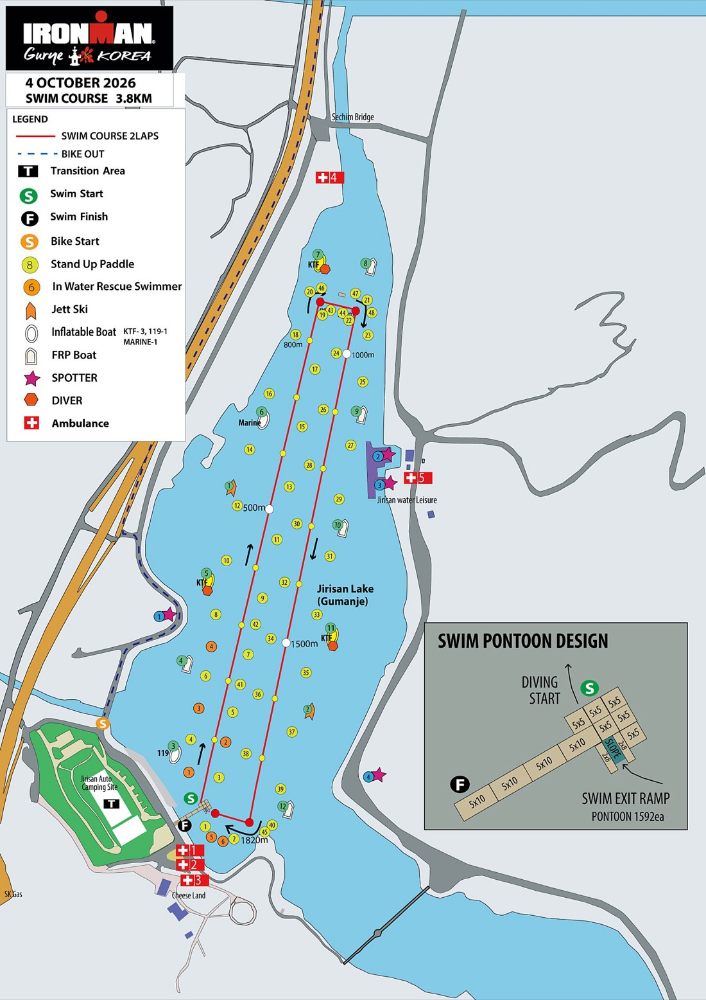
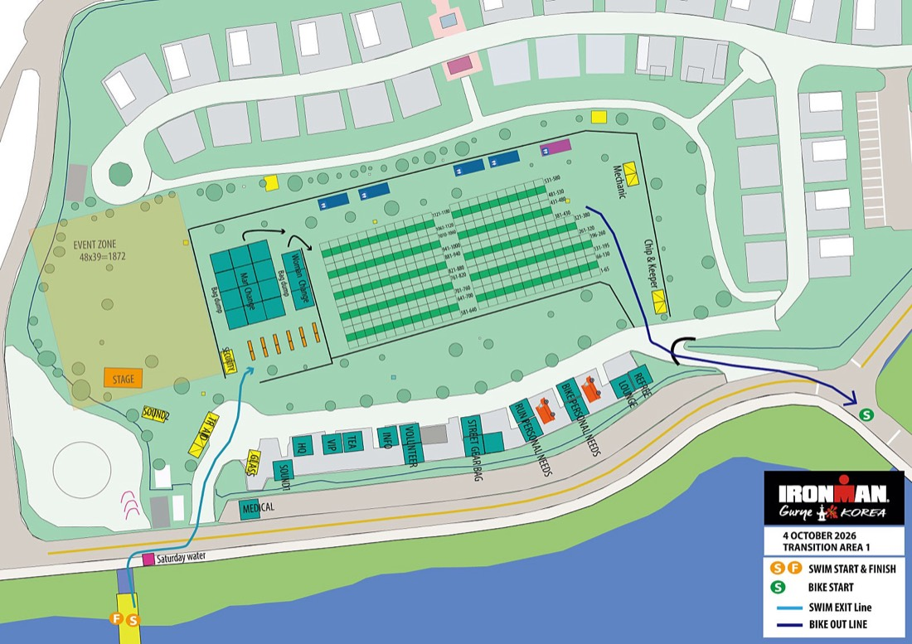
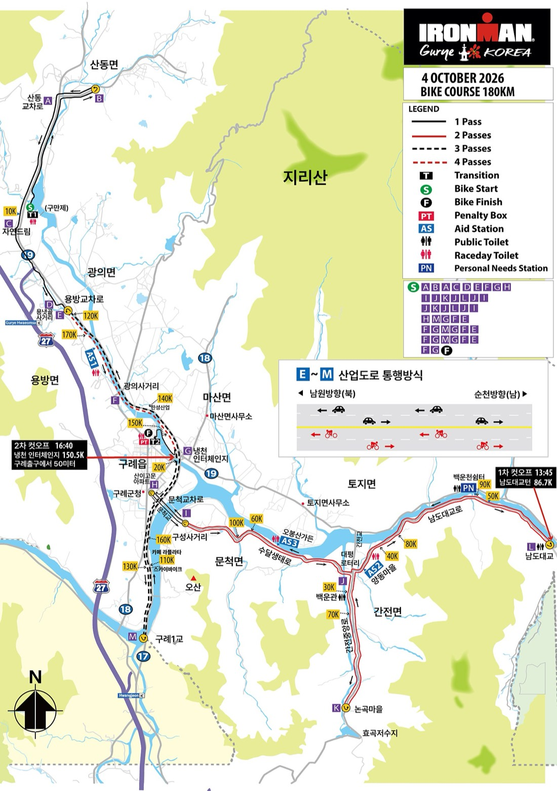
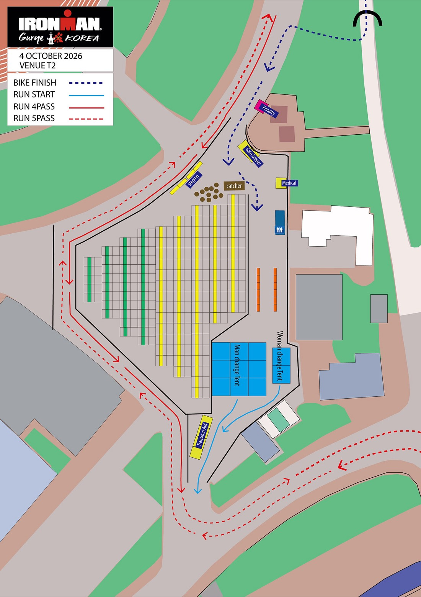
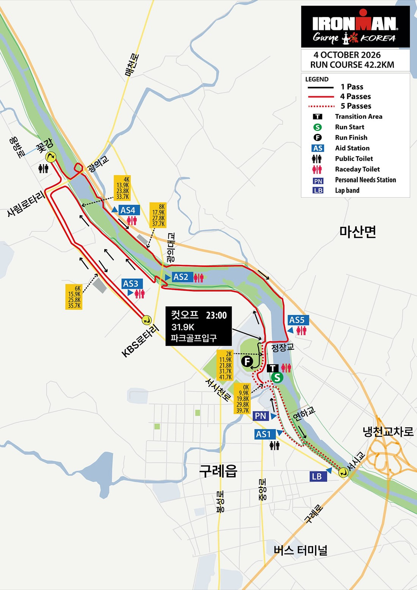
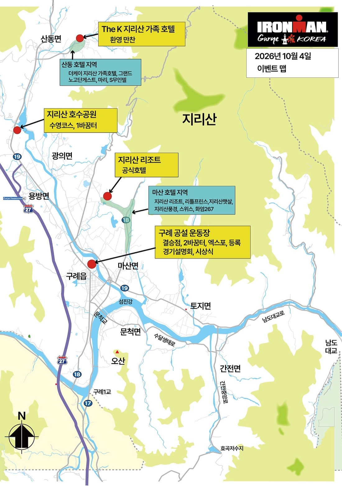
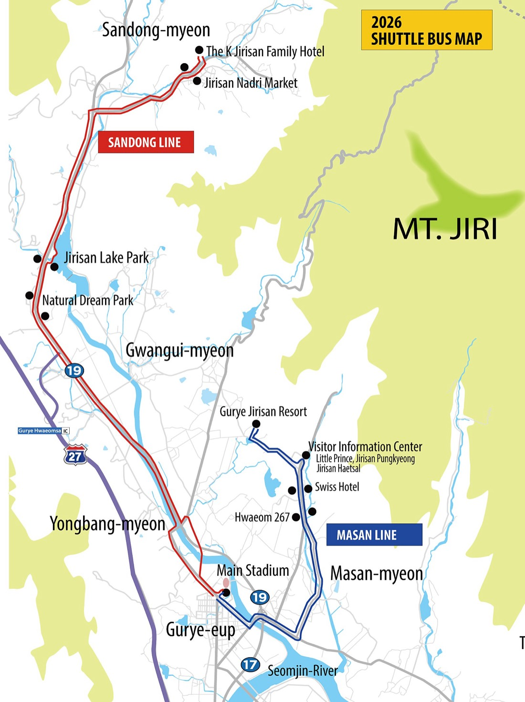
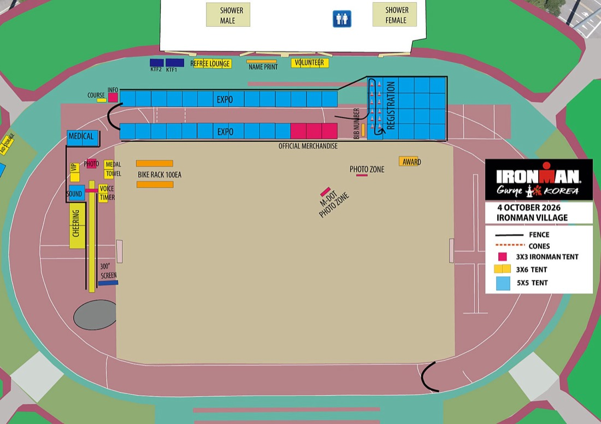
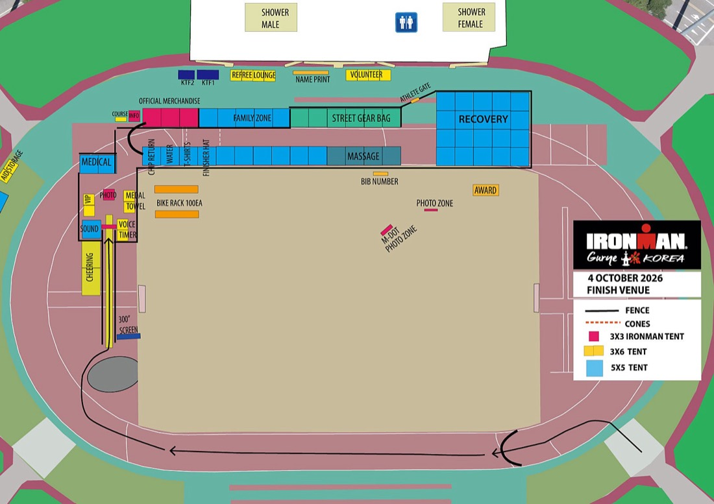

숫자로 보는 구례
계획서에 있던 "180km · 컷오프 24:00" 두 숫자가 바뀌었습니다. 바이크는 3.3km 짧고, 컷오프는 구간별 시계 시각으로 걸려 있습니다.
컷오프 · 전부 시계 시각
| 지점 | 시각 | 내 예상 도착 (기본 시나리오) | 의미 |
|---|---|---|---|
| 바이크 1차 · 남도대교 턴 86.7km | 13:45 | — | T자 순환 2회전째 남도대교. 여기까지 평속 22km/h면 아슬아슬 |
| 바이크 2차 · 냉천교차로 구례출구 150.5km | 16:40 | — | 산업도로 순환 2회전 끝 직후. 구례출구 앞 50m |
| 런 · 파크골프 입구 31.9km | 23:00 | — | 4바퀴째 시작 직후. 여기를 지나면 남은 10km는 걸어도 됨 |
| 공식 종료 | 24:20 | — | 마지막 출발자(07:19) 기준 17시간. 개인은 본인 입수 시각 + 17시간 |
레이스 시뮬레이터 · 내 하루를 미리 돌려보기
거리표 엑셀의 랜드마크 91 + 79개 지점에 내 페이스를 얹어 시계 시각을 계산합니다. 슬라이더를 움직이면 아래 지도의 애니메이션과 표가 전부 같이 바뀝니다. 설정은 이 기기에 저장됩니다.
내 페이스
결과
바이크 랜드마크 79곳 · 도착 시각 거리표 엑셀
| km | 지점 | 경과 | 시각 |
|---|
런 랜드마크 91곳 · 도착 시각 4바퀴 + 2.34km
| km | 지점 | 경과 | 시각 |
|---|
수영 · 긴 직사각형 두 바퀴
서쪽 변을 따라 북으로 약 900m, 꼭대기에서 50m 건너, 동쪽 변으로 900m 내려와 출발 폰툰 앞에서 돌아 한 바퀴 더. 꼭대기 회전 지점에 5×10m 휴식 폰툰이 있습니다. 두 바퀴 모두 물 안에서 돕니다(육상 통과 없음).
뒤쪽에 서서 늦게 들어간다 — 그래도 07:19 전이다
1,160명이 5명씩 5~6초 간격이니 마지막 조가 07:19에 들어갑니다. 계획대로 10~15초 늦게 옆·뒤에서 출발하는 게 롤링 스타트에서는 그냥 "뒤쪽 줄에 서는 것"입니다. 예상 수영 1:40 근처 사람들 뒤에 서면 앞에서 밟힐 일도, 뒤에서 치일 일도 줄어듭니다. 단, 컷오프는 시계 시각이라 07:15 이후 입수는 여유 5분씩을 깎아먹는다는 것만 기억.
사이팅 기준은 부이 줄과 꼭대기 폰툰
서쪽 변은 부이가 약 100m 간격으로 한 줄로 이어집니다. 6~8스트로크마다 고개 들어 다음 부이만 확인하면 됩니다. 500m·800m·1000m·1500m·1820m에 거리 부이가 있어 바퀴 안에서 내가 어디쯤인지 압니다. 꼭대기 폰툰이 보이면 좌회전 준비.
1바퀴 = 25분이면 정확히 계획대로
2:38/100m로 1.9km면 50분, 1바퀴 25분. 첫 400m 오버페이스 금지. 첫 바퀴 시계를 보고 25분 ± 2분이면 그대로, 22분 이하면 두 번째 바퀴는 한 단계 늦춥니다. 물속에서 힘을 아끼는 것이 바이크 6시간을 삽니다.
휴식 폰툰은 쓰지 않을 계획, 쓰면 30초만
꼭대기 860m 지점 회전부에 있습니다. 심하게 부딪혔거나 고글에 물이 찼을 때만 잡고 정리. 폰툰을 잡는 건 실격이 아니지만 앞으로 나아가면 안 됩니다.
출구 램프 → 400m 남았을 때부터 다리를 깨운다
두 바퀴째 1500m 부이를 지나면 킥을 조금 넣어 다리에 피를 보내고, 마지막 50m는 웻슈트 지퍼 끈을 찾아둡니다. 램프는 경사(SLOPE) 폰툰이라 서두르지 말고 손으로 짚고 올라갑니다.
공식 수영 코스도 보기

바꿈터 1 · 토요일에 맡긴 것은 일요일에 못 만진다
바이크백은 토요일 T1에 걸면 일요일 아침 접근 불가(봉사자에게 부탁해 전달만 가능). 헬멧은 바이크백에만, 사이클화는 페달에 끼워 두면 자전거와 함께 거치 가능. 나머지는 전부 바이크백. 체인지 텐트에서 갈아입을 수 있고, 백은 봉사자가 챙깁니다.
토요일 바이크백에 넣는 것 (일요일 못 봄)
- 헬멧 — 반드시 바이크백. 선글라스는 헬멧 안에
- 배번 벨트(바이크는 등 쪽) · 양말(신을 거면) · 팔토시
- 여분 젤 2개 + 전해질 캡슐 지퍼백 — 일요일 아침 자전거에 못 붙였을 때 보험
- 수건 작은 것 · 바세린 미니 · 타월(발 닦기)
- 사이클화는 페달에 끼워서 자전거에 둠. 클리트 커버 없이 신는 연습은 9/20에
일요일 05:10~06:40 T1에서 하는 것
- 물통 2개(자작 레시피, 차갑게) 장착 · 벤토박스에 젤 세팅 · 남는 젤 탑튜브 테이핑
- 타이어 공기압(메카닉 05:10~10:00 상주) · 변속 확인 · 가민 위성 잡기
- 스트리트 기어백(수영 후 안 쓰는 옷·슬리퍼) 05:10~06:40 맡김
- 바이크 PN백 · 런 PN백 05:10~06:40 맡김 — 내용은 보급 페이지
- 06:00~06:20 수영 웜업 → 06:25 에어로빅 → 06:40 대기열
램프 → 배번 백 거치대 → 체인지 텐트
출구 램프에서 올라오면 캠핑장 쪽 길을 따라 백 거치대로 갑니다. 내 배번 줄을 미리 외워 두기(토요일 체크인 때 사진). 백을 들고 텐트로 — 텐트 안에서 웻슈트 벗고 헬멧·벨트·양말. 봉사자가 백을 가져갑니다.
T1 보급소 · 물 · 게토레이
텐트 나오면서 물 200~300ml + 젤 1개 + 전해질 캡슐 1개. 바이크 위에서 바로 시작하는 게 낫다는 계획 그대로.
자전거 → 마운트 라인 → 바로 3.5km 오르막
바이크 아웃은 캠핑장 남동쪽 출구. 마운트 라인 넘어 타자마자 산동교차로까지 3.5km 오르막이 나옵니다. 여기서 175W를 넘기지 말 것. 첫 40km는 130W대라는 계획이 정확히 이 구간을 위한 겁니다.
공식 T1 배치도 보기

바이크 · 다섯 조각으로 쪼개서 탄다
지도 선의 색이 경사도입니다 — 오르막이 있는 자리와 그 언덕을 몇 번 오르는지가 한눈에 보이고, 아래 고도 프로파일과 언덕 표가 같은 데이터에서 나옵니다. 코스를 통째로 보면 복잡하지만 순서대로 다섯 조각입니다. ① 산동 왕복 13.5km ② 산업도로 남하 → 문척 9.6km ③ 문척·간전 T자 순환 2회전 79km ④ 구례1교~용방 산업도로 순환 3회전 73km ⑤ T2 진입 7.7km. 지도 위 점은 시뮬레이터 시계를 따라 움직입니다.
언덕 목록 · 같은 언덕을 몇 번 오르나
획득고도 20m 이상, 평균 경사 0.9% 이상인 오르막만(구례는 급한 언덕이 없어 기준을 낮춤). 같은 자리의 언덕은 한 줄로 묶고 통과 횟수를 표시. 위치·고도는 OSM 도로망 + Copernicus DEM(90m)이라 실제와 수 m 차이가 있을 수 있음.
| 언덕 | 시작 km (통과) | 길이 | 획득 | 평균 / 최대 | 파워 · 할 일 |
|---|
다섯 조각 · 각 조각에서 할 일
| 조각 | km | 길 | 파워 · 할 일 |
|---|---|---|---|
| ① 산동 왕복 | 0 → 13.5 | T1 → 산동교차로 3.5km 오르막 → 우회전 1km 오르막 → 산수관 U턴 → 내려와 산동교차로 좌회전 → 자연드림 우회로 → 죽정마을 → 용산로·용방로 → 용방교차로 U턴 | 130W대 고정, 오르막 175W 상한. 다리 깨우는 구간. 0:20에 첫 물통. 내리막에서 앞사람 추월 욕심 금지 |
| ② 산업도로 남하 | 13.5 → 23.1 | 용방 U턴 후 1.7km에 AS1(첫 보급) → 광의사거리 → 냉천교차로 → 문척교차로로 내려가 산이고운아파트 U턴 → 문척교 건너 구성사거리 | AS1에서 물통 교체 연습(첫 보급소는 여유 있게). 산업도로는 자전거가 양방향 갓길을 씀 — 마주 오는 선수와 교차하니 중앙선 쪽으로 붙지 말 것 |
| ③ T자 순환 ×2 | 23.1 → 102.0 | 구성 → 대평로터리 → 백운관 → 논곡 U턴 → 삼산 → 대평 → 양동(AS2) → 백운천 → 남도대교 U턴 → 백운천(2회전째 PN) → 무수내 → 대평 → 오봉산가든(AS3) → 구성. 1회전 39.5km, 대평로터리를 4번 지남 | 135~145W. 속도계 100km 넘으면 3회전 돌지 말고 문척교로. 남도대교 2회전째(86.7km)가 1차 컷오프 13:45. 90km PN에서 젤 재보급 + 화장실. AS3는 자리가 좁아 게토레이 테이블 2개 적음 |
| ④ 산업도로 순환 ×3 | 102.0 → 169.0 | 산이고운 U턴 → 스카이바이크 → 구례1교 U턴 → 문척교차로 → 한성산업 → 광의 → 용방교차로 U턴 (1회전 24.4km). 용방 턴 직후 AS1을 매번 지남(121.9 · 146.3 · 170.7) | 여기가 승부처. 3시간 30분 이후 = 8/30에 무너진 지점. 젤·음료만, 고형식 종료. 냉천교차로 3회째 통과(150.5km)가 2차 컷오프 16:40. 용방 4번째 U턴이 마지막 U턴 |
| ⑤ T2 진입 | 169.0 → 176.7 | AS1(마지막) → 냉천교차로에서 구례읍 출구로 빠짐 → 서시천 뚝방도로 → 정장교 좌회전 → 다리 건너 다시 좌회전 → 80m 뒤 하차선 | 마지막 20분은 물만. 정장교 좌회전 10km/h 이하 — 안 줄이면 충돌·부상. 좌회전 하자마자 하차 준비, 바이크 캐처가 자전거를 받아감 |
냉천교차로 구례출구로 빠져 서시천 뚝방을 따라오면 정장교. 여기서 좌회전, 다리 건너서 다시 좌회전. 두 번째 좌회전 후 80m가 안 되는 거리에 하차선입니다.
운영자가 글에서 세 번 반복한 유일한 경고: "정장교 좌회전에서 10km/h 이하로 안 줄이면 꽝, 부상 위험." 하차선 직전이라 뒤에서 오는 선수도 감속합니다. 뚝방에서 미리 기어를 가볍게 바꾸고, 첫 좌회전부터 브레이크.
T2는 좁아 거치대 간격이 좁고, 바이크 캐처 봉사자가 자전거를 받아 거치합니다. 나는 자전거를 넘기고 백 거치대로 뛰어가 체인지 텐트로.
U턴 14번 · 한 번에 12초, 그리고 파워 스파이크
산수관 1 · 용방 4 · 산이고운 2 · 논곡 2 · 남도대교 2 · 구례1교 3. 시간 손실은 총 3분이라 별것 아닙니다. 문제는 콘 돌고 일어서서 밟는 습관 — 매번 300W를 5초씩 찍으면 14번이면 NP가 5W 올라가고 다리에 젖산이 쌓입니다. 턴 전 기어 2단 가볍게 → 앉아서 90rpm으로 재가속. 9/15·9/22 실외에서 U턴 연습 10회씩.
같은 길을 여러 번 — 랩 카운트를 가민에 맡기지 말 것
대평로터리 4번, 용방교차로 U턴 4번, 구례1교 U턴 3번. 운영자 조언대로 속도계 누적 거리로 판단합니다. T자 순환은 100km 넘으면 끝, 산업도로 순환은 용방 U턴 4번째(169km)가 끝. 탑튜브에 테이프로 "T자 ×2 → 102 · 용방 ×4 → 169" 써 붙이기.
보급소 간격 20~24km = 43~52분 · 물통 1개/시간 계획과 맞다
AS1 15.2 → AS2 39.0(23.8km) → AS3 58.7 → AS2 78.5 → AS3 98.2 → AS1 121.9(23.7km) → 146.3 → 170.7. 자작 물통 2개로 출발하면 첫 2시간은 내 것, 이후는 보급소 게토레이. 세부는 보급 페이지.
산업도로 통행 방식 — 양방향 자전거가 같은 도로
E~M 구간은 차가 가운데, 자전거가 양쪽 바깥 차로를 씁니다. 남원방향(북)으로 갈 때와 순천방향(남)으로 갈 때 마주 오는 선수가 옆 차로에 있음. 추월은 왼쪽으로만, 중앙선 넘지 않기(페널티 박스가 T2 옆에 있습니다).
메카닉 · SAG
1·2보급소 고정 메카닉, 이동 메카닉 6명, SAG 차량 4대. 펑크는 스스로 때우는 게 빠릅니다(튜브 2 · CO2 2). 대회일 새벽 T1에도 메카닉이 있으니 공기압은 거기서.
공식 바이크 코스도 보기

바꿈터 2 · 자전거는 넘기고 뛴다
토요일 10:00~18:20에 런 기어백을 여기 맡깁니다(T1과 다른 장소, 운동장 옆). 일요일에는 캐처가 자전거를 받고, 나는 백 거치대 → 체인지 텐트 → 런 아웃. T2 보급소는 물·게토레이.
토요일 런 기어백
- 러닝화(끈 미리 고정) · 양말 새것 · 모자
- 배번 벨트는 바이크 것 그대로(앞으로 돌리기) — 따로 넣지 않음
- 젤 1개(런 출발 직전용) + 전해질 캡슐 3개 · 바세린
- 헤드램프 또는 팔 LED — 18:11 일몰, 2바퀴째부터 어두움. 코스에 조명은 있으나 보험
- 얇은 긴팔(밤 15℃ 대비) · 물티슈
T2 순서 (10분)
정장교 감속 → 하차선 → 캐처에게 자전거
헬멧 벗지 말고 그대로 백 거치대까지 뛰기. 헬멧은 텐트에서.
텐트: 양말·신발·모자 · 발 상태 확인
물집 하나가 6시간을 망칩니다. 발이 젖어 있으면 닦고 바세린.
나오면서 젤 1 + 물 200ml + 캡슐 1
런 출발 직전 젤은 필수. 운동장 옆 시작점에서 1km부터 걷뛰 4:1.
공식 T2 배치도 보기

런 · 서시천 9.92km 네 바퀴
운동장 앞에서 출발해 서시교 쪽으로 0.9km 갔다 돌아오고, 서시천 산책로를 따라 북서로 올라가 KBS로터리에서 돌고, 꽃강에서 돌아 동쪽 강변으로 내려옵니다. 한 바퀴에 보급소 5곳, 턴 3곳. 4바퀴 후 서시교 턴 → 보급소 → 운동장 진입 → 피니시.
바퀴별 계획 · 시계와 빛
| 바퀴 | km | 시작 시각 | 빛 | 할 일 |
|---|---|---|---|---|
| 1 | 0 → 9.9 | — | — | 첫 5km 5:30보다 빠르지 않게. 1km부터 걷뛰 4:1. AS1(1.4km)에서 콜라 1컵 — 잘 넘어가는지 확인. 서시교 턴에서 랩밴드 받기 |
| 2 | 9.9 → 19.8 | — | — | 매시간 젤 1 + 매 보급소 콜라 또는 게토레이 1컵. 해가 지면 헤드램프 켜기. 조명대 구간은 발밑 주의 |
| 3 | 19.8 → 29.8 | — | — | 콜라 위주 전환(2컵 + 물 1컵). 걷기 1분을 절대 줄이지 말 것 — 여기서 줄이면 4바퀴째 전부 걷게 됨 |
| 4 | 29.8 → 39.7 | — | — | 파크골프 앞(31.9km) 컷오프 23:00 통과 확인. 이후는 뭘 해도 완주. 안 넘어가면 콜라·물만 |
| 피니시 | 39.7 → 42.0 | — | — | 서시교 턴 → AS1 → 운동장. 피니시 방향이 작년과 반대(잔디 보호). 마지막 300m는 뛰기 |
보급소 21곳 = 1.6~2.4km마다 · 걷뛰 리듬과 맞춘다
AS1 1.38 → AS2 3.19 → AS3 5.27 → AS4 7.69 → AS5 9.33 → (다음 바퀴 AS1까지 1.97). 걷뛰 4:1이면 5분마다 걷는 1분이 오는데, 보급소가 보이면 그 자리에서 걷기 1분을 시작하면 됩니다. 구성: 스펀지 → 물 → 게토레이·콜라 → 음식(오렌지·바나나·비스킷·젤·소금·포도당정) → 게토레이·콜라 → 물 → 물품(선크림·바세린·에어파스) → 화장실 → 스펀지.
런 퍼스널니즈 · 1.48km · 5번 지남 · 여러 번 사용 가능
AS1 지나 100m 분수광장. 바이크 PN과 달리 다시 쓸 수 있고(Multiple Pickups 테이블에 반납) 다 썼으면 버리는 곳에. 젤이 8천 개뿐이라 주최 측도 개인 젤을 권합니다 — 런 PN백에 젤 5개 + 캡슐 + 여분 양말. 세부는 보급 페이지.
빛 · 18:11 일몰, 18:37 완전히 어두움
기본 시나리오로 약 23km에서 해가 집니다. 코스 조명은 ① 가로등 구간 ② 전기공사 조명 구간 ③ 조명대·캠핑등 구간 세 종류이고, 작년 캠핑등이 너무 어두웠던 걸 올해 밝힌다고 합니다. 그래도 헤드램프는 T2 백에. 어두워지면 페이스가 자연히 떨어지니 3바퀴째 기록이 나빠도 정상.
랩밴드 · 바퀴 세기
서시교 턴(0.9km)에서 바퀴마다 밴드를 받습니다. 밴드 4개 + 마지막 서시교 턴 = 피니시 방향. 가민 랩보다 밴드를 믿을 것.
도로 구간 1.2km · 사림로터리 ↔ KBS로터리
나머지는 전부 산책로·자전거길. 도로 구간은 차량 통제라도 턴 직후 마주 오는 선수가 있으니 오른쪽 유지.
공식 런 코스도 보기

나흘 일정 · 어디에 몇 시에 있어야 하나
운영자가 "이곳에 올린 일정이 맞다"고 못 박은 표입니다. 장소가 셋으로 나뉩니다 — 공설운동장(등록·검차·엑스포·피니시·T2 옆), 지리산 호수공원(수영·T1), 지리산 둘레길 센터(설명회·T2). 호수공원과 운동장은 셔틀 산동 라인으로 연결.
| 시각 | 이벤트 | 장소 | 나 |
|---|---|---|---|
| 금요일 10/2 — 수원 출발. 오전 러닝 20분 후 이동(약 4시간) | |||
| 10:00~17:00 | 선수 체크인 · 메카닉 · 공식 상점 · 엑스포 | 공설운동장 | 도착하면 체크인 먼저. 배번·칩·백 4개 수령. 배번 위치 사진 |
| 16:15~17:00 | 의무 레이스 브리핑 (한국어) | 지리산 둘레길 센터 2층 | 금요일에 듣는다. 토요일 것은 16:30이라 검차·체크인과 겹침 |
| 18:00~19:30 | 개회식 | 더케이 지리산 호텔 (산동) | 선택. 일찍 자는 게 우선 |
| 토요일 10/3 — 운동장 → 호수공원 → 운동장 순서. 이동 거리 있으니 오전에 끝낸다 | |||
| 09:00~17:30 | 체크인 · 메카닉 · 상점 · 엑스포 | 공설운동장 | 금요일 못 한 게 있으면 여기서 |
| 10:00~18:20 | 자전거 검차 → 검차 스티커 | 공설운동장 메인 행사장 | 운동장에서 검차받고 스티커. 토요일 T1에는 메카닉 없음 — 정비는 운동장에서 끝낼 것 |
| 10:00~18:20 | 의무 바이크 체크인 + 바이크백 체크인 | 지리산 호수공원 (T1) | 헬멧은 바이크백에, 사이클화는 페달에. 물통·젤은 일요일 아침에 |
| 13:00~14:00 · 15:00~16:00 | 공식 수영훈련 1·2 (타이밍 칩 착용 의무) | 수영 코스 · 지리산 호수 | 13:00 세션 15분만 — 수온·웻슈트·부이 시야 확인. 길게 하지 않기 |
| 10:00~18:20 | 의무 런 기어백 체크인 | 지리산 둘레길 센터 옆 주차장 (T2) | 운동장 복귀 후. 헤드램프·러닝화·젤 1 |
| 저녁 | — | 숙소 | 익숙한 탄수 저녁 → 물통 분말 소분 · PN백 2개 포장 → 21:00 취침 |
| 일요일 10/4 · 대회 — 04:00 기상 → 04:15 아침(플랜 B 준비) → 05:00 호수공원 | |||
| 05:10~06:40 | T1 오픈 · 스트리트 기어백 · 바이크 PN백 · 런 PN백 맡김 · 메카닉(~10:00) | 지리산 호수공원 (T1) | 물통 장착 · 젤 세팅 · 공기압 · PN백 2개 제출 |
| 06:00~06:20 | 수영 웜업 | 지리산 호수 | 5~10분만. 06:45 젤 1개 |
| 06:40~06:55 | 대기열 준비 | T1 | 예상 1:40 근처 그룹 뒤쪽 |
| 07:00~07:20 | 롤링 스타트 | 지리산 호수 | |
| 15:20 | 첫 완주자 (예측) | 피니시 · 운동장 북측 | 이때 나는 산업도로 순환 마지막 회전 |
| 16:00~00:30 | 스트리트 · 바이크 기어백 체크아웃 | T1 | 가족이 대신 찾을 수 있는지 체크인 때 확인 |
| 18:00~00:50 | 바이크(자전거) · 런 기어백 체크아웃 | T2 | 완주 후 여기서 자전거 회수 |
| 24:20 | 공식 종료 | ||
| 월요일 10/5 | |||
| 07:30~10:00 | 바이크 · 런 기어백 체크아웃 | T2 | 일요일 밤에 못 찾았으면 |
| 10:00~11:40 | 시상식 · 2027 코나 슬롯 롤다운 | 공설운동장 | 선택. 체크아웃 후 수원 복귀 |
주차 · 셔틀
대회일은 운동장에 주차하고 셔틀(산동 라인)로 호수공원으로 가라는 게 운영자 권고입니다. 호수공원은 스탭 주차로 차고, 선수는 호수 건너편 협소한 곳뿐. 셔틀은 금~월 운행, 2026 시간표는 다음 주 홈페이지(gurye.go.kr/tour/ironman.do)에 교체 예정. 산동 라인: 운동장 ↔ 자연드림파크 ↔ 호수공원 ↔ 산동 호텔. 마산 라인: 운동장 ↔ 지리산 리조트 등 마산 숙소.
숙소 위치 판단
산동 호텔 지역(더케이 지리산 가족호텔 등)은 T1에 가깝고 새벽 이동이 짧습니다. 마산 지역(지리산 리조트 등)은 운동장·피니시에 가깝습니다. 새벽 05:00 T1 도착이 가장 중요하니 산동 쪽이 유리, 단 피니시 후 밤에 T2에서 자전거를 찾아 숙소로 가는 동선은 미리 정해둘 것(가족 차량).
이벤트 맵 · 셔틀 맵 · 운동장 배치 보기




코스가 정한 마지막 3주 과제
체력은 9/20 이후 못 올립니다. 남은 건 이 코스에서 시간을 잃는 자리를 미리 겪어 보는 것뿐입니다. 훈련 캘린더(exercise.html)에 반영한 항목입니다.
9/20 180km 리허설을 "구례 방식"으로
물통 2개 자작 → 이후 게토레이(시판)로 교체해 대회 보급소 음료를 미리 위장에 시험. 파워젤·GO 시간당 2개. 90km 지점에서 1분 정지 후 재출발(PN 시뮬레이션). U턴 14회를 코스에 넣어 앉아서 재가속. 마지막 20분 물만. 런 20km는 첫 5km 5:30 상한, 2km마다 30초 걷기 추가(보급소 리듬).
어두운 데서 뛰어 본다
런 2~4바퀴는 해 진 뒤입니다. 9/22 또는 9/29 저녁 러닝을 19:00 이후 헤드램프 켜고. 발밑 감각과 페이스 체감 차이를 미리 알아둘 것.
사이팅은 직사각형 코스 기준으로
9/17 3,000m · 9/27 3.8km 완영에서 8스트로크마다 고개 들기 + 100m마다 가상 부이. 첫 400m를 25분 페이스보다 빠르지 않게 들어가는 연습(스타트 후 첫 100m 시계 확인).
마운트 · 디스마운트 · 페달에 끼운 신발
사이클화를 페달에 끼워 두고 맨발 양말로 뛰어가 올라타는 연습을 9/26 브릭에서 5회. 안 되면 T1에서 신고 뛰기로 확정(느리지만 안전). 하차선 앞 10km/h 감속 → 정지 → 내리기도 같이.
백 4개를 미리 싸 본다 — 9/27 저녁
바이크백(토), 런 기어백(토), 스트리트백(일), 바이크 PN백(일), 런 PN백(일). 각각 지퍼백에 라벨. 리스트는 보급 페이지.
추석 9/24 답사
구례까지 가면 정장교 좌회전 → 하차선, 산동교차로 오르막, 산업도로 갓길 세 곳만 차로 지나보기. 호수공원 주차장·셔틀 정류장 위치 확인.